The idea
Your phone dies when you are away from a charger, and you need power now. PocketPower lets you rent a power bank from a station in a partner café and return it to any station in the city.
I set one goal for the design: a person who is already stressed about a low battery should get from "I need power" to "I am charging" in a few taps, with no surprises about price.
The flow
Eleven screens in four steps: get in, find a station, rent, return.
1. Get in
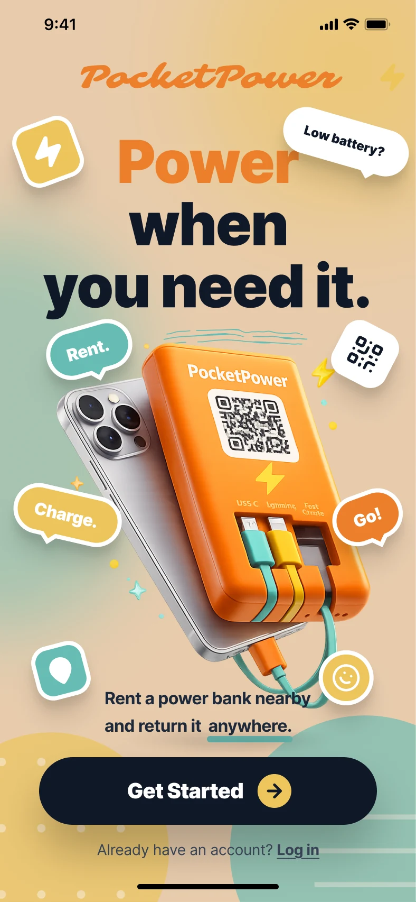
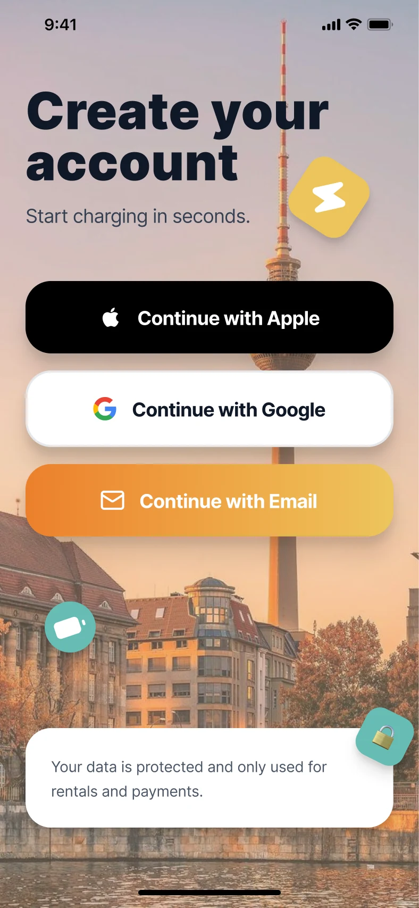
The first screen explains the idea instantly with a playful visual identity. The sign-up screen keeps registration short, and a note about data use sits where people look before they tap.
2. Find a station
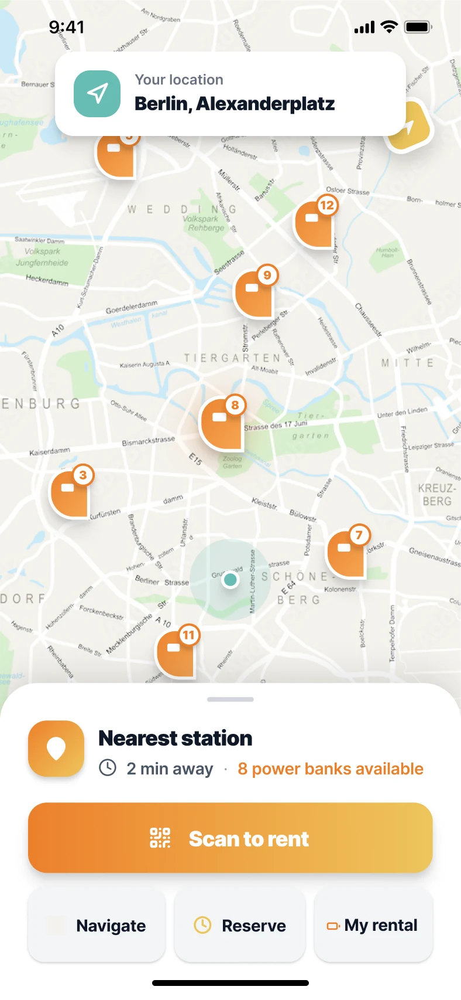
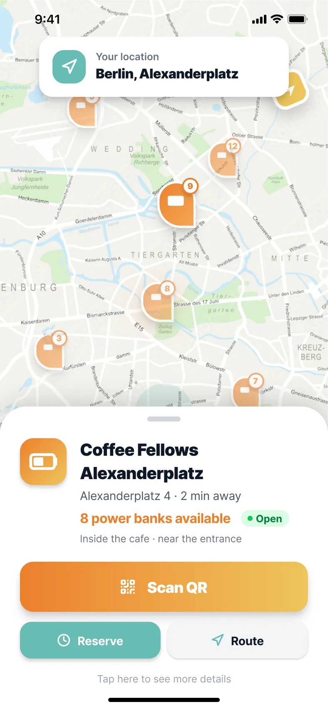
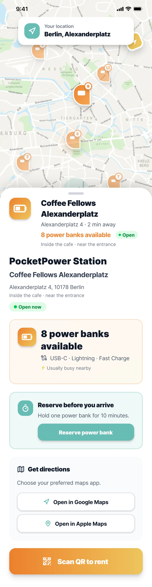
The map stays visible while users explore stations, and a bottom sheet reveals details in steps: a short summary first, the full information only when asked. This keeps the map useful and the first view calm.
3. Rent
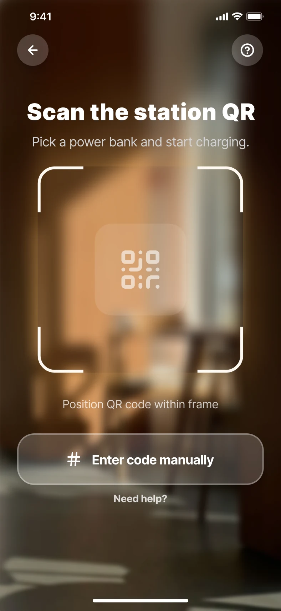
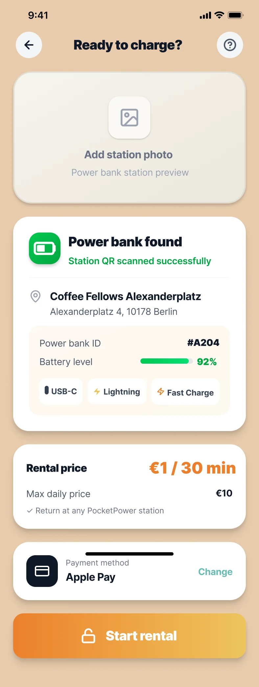
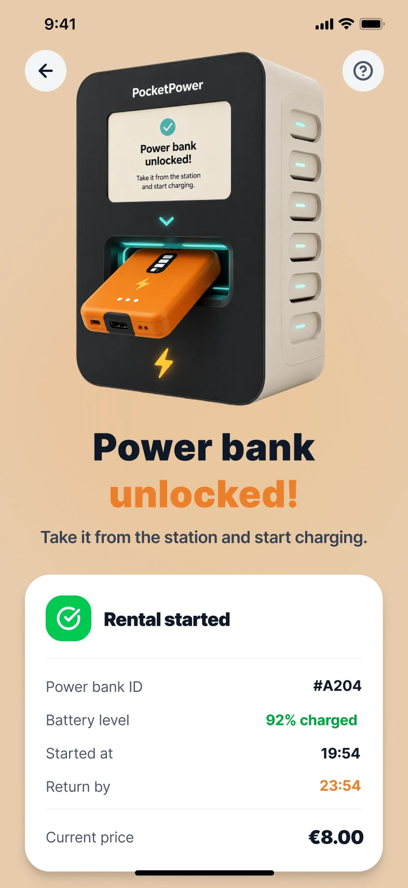
After scanning, the user confirms the price and starts the rental manually. Three decisions shaped this flow: the price is shown upfront (€1 per 30 minutes, €10 per day maximum), the payment method is visible before the start, and the rental starts only when the user taps "Start rental", never automatically.
4. Return
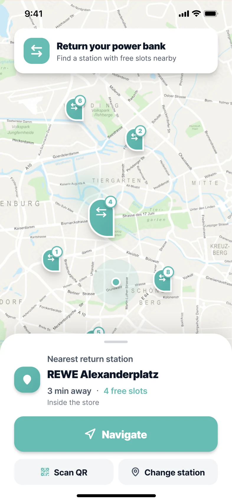
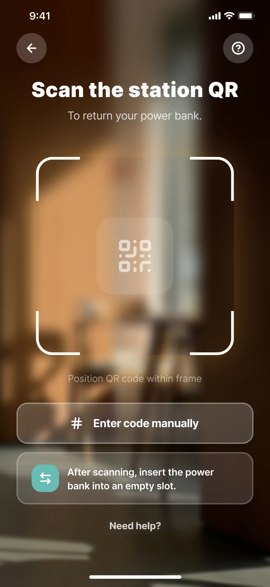
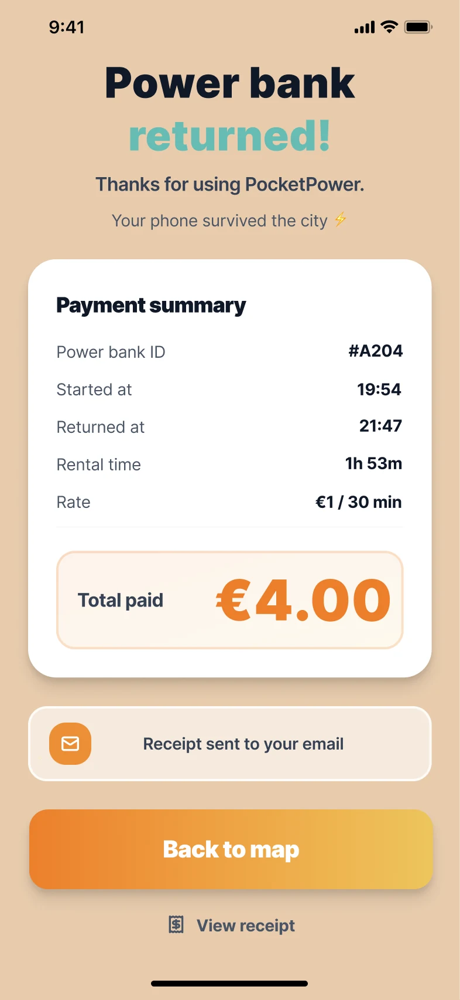
Returning mirrors renting, so there is little to learn: a map of stations with free slots, a scan, and a summary of time and cost.
Visual identity
A warm palette of orange and amber, with teal as the second color on a sand background, and Inter as the typeface. The brand gradient (orange to amber) is reserved for the main action on each screen, so the eye always knows where to go next.
#ec802b
#edc55b
#66bcb4
#e8ccad
#101828
What I would improve
Looking at the finished flow, I see four things I would fix next:
- Placeholder photo. The confirm screen has an "Add station photo" box. It needs a real photo of the station or should be removed so it does not take up the top third of the screen.
- Overlapping home indicator. On the confirm screen the home indicator sits on top of the payment card. The content needs extra bottom padding.
- Contrast. White text on the orange gradient is below the 4.5:1 WCAG AA level. I audited this and proposed fixes in the design system case.
- A long expanded sheet. The expanded station sheet holds a lot. I would test whether "Reserve" and "Get directions" belong there or on a separate step.
What I would test
- Give 5 people the task "rent a power bank and return it" and watch where they hesitate.
- Ask whether the price, shown on the confirm screen, is clear enough or should appear on the map sheet already.
- Check the screens outdoors in bright light.
More from this project
The same product, seen from two other sides: a system of tokens and components behind the app, and the dashboard for the cafés that host the stations.